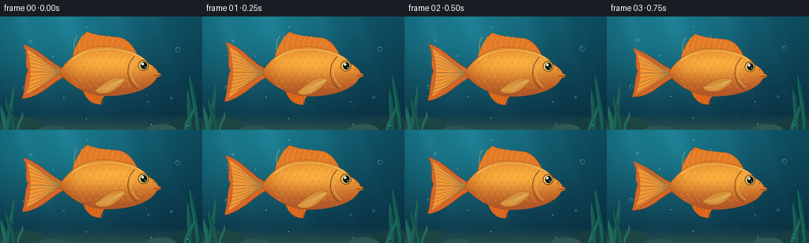
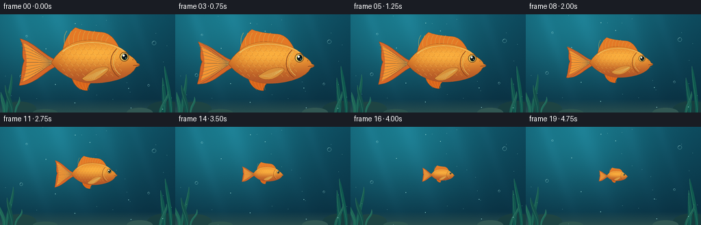

CODING AGENTS AS PIXEL WORLD MODELS
traex/GPT-6.1-Sol · instance_preservation_0051
点击播放 · 原生 RGB 像素
逐轮保存的候选
回放视频、检查图与代码变化。
每份候选均可单独播放。实际图片检查记录在下方工具轨迹中。
候选 01播放与检查图
点击播放 · 原生 RGB 像素


展开代码变化
--- 上一保存版本
+++ 本次保存版本
@@ -0,0 +1,151 @@
+from pathlib import Path
+import math
+import numpy as np
+from PIL import Image, ImageDraw, ImageFilter
+import artifact_io
+
+ROOT = Path(__file__).resolve().parent
+W,H=256,144
+AA=4
+
+def bezier(points, steps=24):
+ p=np.asarray(points,float)
+ if len(p)==4:
+ return [tuple((1-t)**3*p[0]+3*(1-t)**2*t*p[1]+3*(1-t)*t*t*p[2]+t**3*p[3]) for t in np.linspace(0,1,steps)]
+ return list(points)
+
+def path(*segments):
+ out=[]
+ for seg in segments: out += bezier(seg)
+ return out
+
+# Fixed camera, gently lit water, distant plants and a sandy bottom.
+def background(t):
+ y,x=np.mgrid[0:H*AA,0:W*AA].astype(float);x/=AA;y/=AA
+ depth=y/H
+ glow=np.exp(-((x-72)/122)**2-((y-16)/97)**2)
+ arr=np.empty((*x.shape,3),float)
+ for c,(top,bot,g) in enumerate([(12,9,14),(69,44,54),(88,61,54)]):
+ arr[:,:,c]=top*(1-depth)+bot*depth+g*glow
+ # Broad underwater light shafts.
+ ray=np.zeros_like(x)
+ for p,amp,width in [(27,7,9),(82,9,15),(148,5,11),(194,4,8)]:
+ ray+=amp*np.exp(-((x-p-y*.34)/width)**2)*(1-depth*.8)
+ arr+=ray[:,:,None]*np.array([.55,1,1.2])
+ sand=np.clip((y-124)/19,0,1)
+ arr=arr*(1-sand[:,:,None]*.85)+np.array([44,81,80])[None,None,:]*(sand[:,:,None]*.85)
+ rng=np.random.default_rng(11)
+ arr+=rng.normal(0,.5,x.shape)[:,:,None]
+ im=Image.fromarray(np.uint8(np.clip(arr,0,255))).convert('RGBA')
+ d=ImageDraw.Draw(im,'RGBA')
+ def coords(ps):return [(round(a*AA),round(b*AA)) for a,b in ps]
+ # Soft rock shapes, kept small at the bottom edge.
+ for cx,cy,rx,ry,col in [(29,139,24,11,(30,68,67,255)),(242,141,28,14,(24,61,63,255)),(204,144,19,7,(49,87,83,255)),(66,144,18,5,(44,84,79,255))]:
+ d.ellipse(((cx-rx)*AA,(cy-ry)*AA,(cx+rx)*AA,(cy+ry)*AA),fill=col)
+ # Ribbonlike aquatic grass framing, rather than obscuring, the fish.
+ for base,height,bend,width,col in [(10,57,8,3,(22,93,82,255)),(18,41,-9,4,(19,80,74,255)),(7,31,-7,3,(29,103,87,255)),(241,52,-5,4,(16,85,78,255)),(251,69,-10,3,(15,89,79,255)),(235,32,9,3,(28,97,85,255)),(23,24,7,2,(30,103,88,255))]:
+ sway=math.sin(t*1.2+base)*2
+ p=path([(base,145),(base+width,132),(base+bend+sway+4,145-height+10),(base+bend+sway,145-height)],[(base+bend+sway,145-height),(base+bend+sway-2,145-height+12),(base-width,133),(base-width,145)])
+ d.polygon(coords(p),fill=col)
+ d.line(coords(bezier([(base,145),(base-1,129),(base+bend+sway-1,145-height+14),(base+bend+sway,145-height)])),fill=(53,124,103,170),width=AA//2)
+ # Distant suspended flecks and a few air bubbles.
+ rng=np.random.default_rng(47)
+ for i in range(29):
+ px=float(rng.uniform(4,252)); py=(float(rng.uniform(0,144))-t*(1+i%3)*.55)%144
+ r=.25 if i%4 else .5
+ d.ellipse(((px-r)*AA,(py-r)*AA,(px+r)*AA,(py+r)*AA),fill=(137,202,200,36))
+ for bx,by,r in [(31,91,2.2),(225,42,2.8),(217,104,1.5),(39,32,1.3)]:
+ by-=t*2.5
+ d.ellipse(((bx-r)*AA,(by-r)*AA,(bx+r)*AA,(by+r)*AA),outline=(155,226,222,70),width=1)
+ d.arc(((bx-r+.5)*AA,(by-r+.5)*AA,(bx+r-.5)*AA,(by+r-.5)*AA),195,270,fill=(198,239,231,120),width=1)
+ return im
+
+def fish(t):
+ sw,sh=220*AA,140*AA
+ im=Image.new('RGBA',(sw,sh),(0,0,0,0)); d=ImageDraw.Draw(im)
+ def cv(ps):return [((x+115)*AA,(y+70)*AA) for x,y in ps]
+ def poly(ps,fill,outline=None,width=1):
+ d.polygon(cv(ps),fill=fill)
+ if outline: d.line(cv(ps+[ps[0]]),fill=outline,width=max(1,int(width*AA)),joint='curve')
+ def line(ps,fill,width=1): d.line(cv(ps),fill=fill,width=max(1,int(width*AA)),joint='curve')
+ def ell(box,fill,outline=None,width=1):
+ x0,y0,x1,y1=box;d.ellipse(((x0+115)*AA,(y0+70)*AA,(x1+115)*AA,(y1+70)*AA),fill=fill,outline=outline,width=max(1,int(width*AA)))
+ flap=math.sin(t*5.2)*3.6
+ # Fan tail, with scalloped outer lobes and flowing fin rays.
+ tail=path([(-48,-4),(-65,-10),(-79,-29-flap),(-99,-34-flap)], [(-99,-34-flap),(-91,-20),(-99,-12),(-93,-3)], [(-93,-3),(-97,7),(-96,18),(-100,32+flap)], [(-100,32+flap),(-78,31),(-65,13),(-48,5)])
+ poly(tail,(226,104,35,240),(144,71,32,245),.8)
+ inset=path([(-50,0),(-69,-9),(-83,-22-flap),(-94,-28-flap)],[(-94,-28-flap),(-88,-8),(-88,8),(-95,27+flap)],[(-95,27+flap),(-75,16),(-67,8),(-50,0)])
+ poly(inset,(245,150,51,255))
+ for yy in np.linspace(-29,28,11):
+ end=(-94+4*math.cos(yy*.11),yy+flap*(-yy/30))
+ ray=bezier([(-49,0),(-65,yy*.17),(-76,yy*.76),end])
+ line(ray,(154,70,28,180),.52)
+ line([(p[0],p[1]-.6) for p in ray],(255,192,76,170),.35)
+ # Dorsal and ventral fins.
+ dorsal=path([(-39,-15),(-39,-26),(-30,-43),(-21,-50)], [(-21,-50),(-10,-45),(7,-44),(18,-43)],[(18,-43),(31,-40),(36,-29),(40,-22)],[(40,-22),(13,-28),(-19,-25),(-39,-15)])
+ poly(dorsal,(233,121,37,250),(146,75,33,255),.7)
+ for i in range(10):
+ xx=-33+i*6.5
+ top=-45+max(0,xx-6)*.42
+ line(bezier([(xx-2,-24),(xx-5,-30),(xx-4,top+6),(xx,top)]),(255,187,70,220),.5)
+ ventral=path([(-27,18),(-25,32),(-14,40),(-4,39)],[(-4,39),(-4,30),(5,24),(14,20)],[(14,20),(1,24),(-13,23),(-27,18)])
+ poly(ventral,(217,100,27,255),(140,69,27,255),.6)
+ for i in range(5):line(bezier([(-22+i*5,21),(-23+i*5,29),(-19+i*4,34),(-14+i*3,38)]),(250,160,52,255),.45)
+ # Body silhouette, round face with a small projecting mouth.
+ body=path([(-55,0),(-46,-15),(-29,-31),(-6,-32)], [(-6,-32),(22,-33),(45,-23),(54,-11)],[(54,-11),(59,-8),(64,-4),(65,0)],[(65,0),(71,2),(70,5),(64,6)],[(64,6),(57,21),(30,29),(3,29)],[(3,29),(-22,29),(-44,15),(-55,0)])
+ mask=Image.new('L',(sw,sh),0);ImageDraw.Draw(mask).polygon(cv(body),fill=255)
+ yy,xx=np.mgrid[0:sh,0:sw].astype(float);xx=xx/AA-115;yy=yy/AA-70
+ lit=np.exp(-((yy+13)/22)**2-((xx-7)/95)**2)
+ belly=np.clip((yy+8)/42,0,1)
+ shade=np.clip((-xx-32)/26,0,1)
+ rgb=np.zeros((sh,sw,4),np.uint8)
+ rgb[:,:,0]=np.clip(199+52*lit-28*belly-18*shade,0,255)
+ rgb[:,:,1]=np.clip(88+87*lit-5*belly-23*shade,0,255)
+ rgb[:,:,2]=np.clip(23+39*lit+20*belly-9*shade,0,255)
+ rgb[:,:,3]=np.array(mask)
+ im.alpha_composite(Image.fromarray(rgb));d=ImageDraw.Draw(im)
+ # Overlapping, subtly iridescent scale arcs; clipped inside the body.
+ scales=Image.new('RGBA',(sw,sh),(0,0,0,0));sd=ImageDraw.Draw(scales)
+ for row,y in enumerate(np.arange(-22,26,7)):
+ for x in np.arange(-45,37,8):
+ x+=4*(row%2)
+ if ((x+2)/57)**2+(y/28)**2>0.9:continue
+ box=((x-4+115)*AA,(y-4+70)*AA,(x+5+115)*AA,(y+4+70)*AA)
+ sd.arc(box,275,85,fill=(150,76,28,82),width=2)
+ sd.arc((box[0]-1,box[1]-2,box[2]-1,box[3]-2),280,355,fill=(255,218,112,122),width=2)
+ a=np.array(scales);a[:,:,3]=(a[:,:,3].astype(float)*np.array(mask)/255).astype('uint8');im.alpha_composite(Image.fromarray(a));d=ImageDraw.Draw(im)
+ line(body+body[:1],(142,74,28,255),.65)
+ line(bezier([(-39,-16),(-15,-36),(30,-29),(47,-17)]),(255,211,109,235),1.0)
+ # Gill cover curve and cheek, maintaining the same features as it shrinks.
+ line(bezier([(37,-20),(23,-6),(28,13),(40,20)]),(139,68,27,255),1.2)
+ line(bezier([(39,-18),(29,-6),(31,9),(42,17)]),(255,203,95,220),.75)
+ line(bezier([(60,4),(65,3),(67,4),(69,3)]),(114,53,24,255),.75)
+ # Pectoral fin with soft fan rays.
+ wave=math.sin(t*5.2+.5)*3
+ pect=path([(20,6),(7,5),(-5,16+wave),(-12,21+wave)],[(-12,21+wave),(-3,29+wave),(13,24),(24,12)],[(24,12),(28,8),(25,6),(20,6)])
+ poly(pect,(242,151,51,225),(163,85,28,240),.6)
+ for i in range(6):line(bezier([(23,9),(14,10+i*1.2),(3,17+i*1.0),(-10+i*3,21+wave+i*.3)]),(255,204,100,220),.5)
+ # Dark glassy eye with gold iris, a cobalt rim and bright reflection.
+ ell((41,-15,54,-2),(113,69,27,255))
+ ell((42,-14,53,-3),(251,204,97,255))
+ ell((44,-13,52,-4),(13,33,35,255))
+ ell((45,-12,51,-5),(9,21,23,255))
+ ell((45,-12,48.2,-8.7),(250,255,240,255))
+ ell((49,-7.3,50.3,-6),(115,189,189,255))
+ ell((59,-5,60.3,-3.7),(149,82,27,255))
+ return im
+
+frames=[]
+for i in range(20):
+ t=i/4
+ u=np.clip((i-1)/17,0,1)
+ ease=u*u*(3-2*u)
+ scale=1.04*(1-.76*ease)
+ bg=background(t)
+ sprite=fish(t)
+ sprite=sprite.resize((round(220*scale*AA),round(140*scale*AA)),Image.Resampling.LANCZOS)
+ cx=132+2*math.sin(t*.7);cy=71+1.5*math.sin(t*1.5)
+ left=round((cx-115*scale)*AA);top=round((cy-70*scale)*AA)
+ bg.alpha_composite(sprite,(left,top))
+ frames.append(np.asarray(bg.convert('RGB').resize((W,H),Image.Resampling.LANCZOS),dtype=np.uint8))
+artifact_io.save(np.stack(frames),ROOT)
可观测工具轨迹
实际执行的命令与返回图片。
命令 1exit 0
/bin/bash -lc 'ls -la && cat prompt.txt && cat GENERATION_RULES.md && cat task_spec.json'
命令 2exit 0
/bin/bash -lc 'cat artifact_io.py'
命令 3exit 0
/bin/bash -lc "cat > generate.py <<'PY'
from pathlib import Path
import math
import numpy as np
from PIL import Image, ImageDraw, ImageFilter
import artifact_io
ROOT = Path(__file__).resolve().parent
W,H=256,144
AA=4
def bezier(points, steps=24):
p=np.asarray(points,float)
if len(p)==4:
return [tuple((1-t)**3*p[0]+3*(1-t)**2*t*p[1]+3*(1-t)*t*t*p[2]+t**3*p[3]) for t in np.linspace(0,1,steps)]
return list(points)
def path(*segments):
out=[]
for seg in segments: out += bezier(seg)
return out
# Fixed camera, gently lit water, distant plants and a sandy bottom.
def background(t):
y,x=np.mgrid[0:H*AA,0:W*AA].astype(float);x/=AA;y/=AA
depth=y/H
glow=np.exp(-((x-72)/122)**2-((y-16)/97)**2)
arr=np.empty((*x.shape,3),float)
for c,(top,bot,g) in enumerate([(12,9,14),(69,44,54),(88,61,54)]):
arr[:,:,c]=top*(1-depth)+bot*depth+g*glow
# Broad underwater light shafts.
ray=np.zeros_like(x)
for p,amp,width in [(27,7,9),(82,9,15),(148,5,11),(194,4,8)]:
ray+=amp*np.exp(-((x-p-y*.34)/width)**2)*(1-depth*.8)
arr+=ray[:,:,None]*np.array([.55,1,1.2])
sand=np.clip((y-124)/19,0,1)
arr=arr*(1-sand[:,:,None]*.85)+np.array([44,81,80])[None,None,:]*(sand[:,:,None]*.85)
rng=np.random.default_rng(11)
arr+=rng.normal(0,.5,x.shape)[:,:,None]
im=Image.fromarray(np.uint8(np.clip(arr,0,255))).convert('RGBA')
d=ImageDraw.Draw(im,'RGBA')
def coords(ps):return [(round(a*AA),round(b*AA)) for a,b in ps]
# Soft rock shapes, kept small at the bottom edge.
for cx,cy,rx,ry,col in [(29,139,24,11,(30,68,67,255)),(242,141,28,14,(24,61,63,255)),(204,144,19,7,(49,87,83,255)),(66,144,18,5,(44,84,79,255))]:
d.ellipse(((cx-rx)*AA,(cy-ry)*AA,(cx+rx)*AA,(cy+ry)*AA),fill=col)
# Ribbonlike aquatic grass framing, rather than obscuring, the fish.
for base,height,bend,width,col in [(10,57,8,3,(22,93,82,255)),(18,41,-9,4,(19,80,74,255)),(7,31,-7,3,(29,103,87,255)),(241,52,-5,4,(16,85,78,255)),(251,69,-10,3,(15,89,79,255)),(235,32,9,3,(28,97,85,255)),(23,24,7,2,(30,103,88,255))]:
sway=math.sin(t*1.2+base)*2
p=path([(base,145),(base+width,132),(base+bend+sway+4,145-height+10),(base+bend+sway,145-height)],[(base+bend+sway,145-height),(base+bend+sway-2,145-height+12),(base-width,133),(base-width,145)])
d.polygon(coords(p),fill=col)
d.line(coords(bezier([(base,145),(base-1,129),(base+bend+sway-1,145-height+14),(base+bend+sway,145-height)])),fill=(53,124,103,170),width=AA//2)
# Distant suspended flecks and a few air bubbles.
rng=np.random.default_rng(47)
for i in range(29):
px=float(rng.uniform(4,252)); py=(float(rng.uniform(0,144))-t*(1+i%3)*.55)%144
r=.25 if i%4 else .5
d.ellipse(((px-r)*AA,(py-r)*AA,(px+r)*AA,(py+r)*AA),fill=(137,202,200,36))
for bx,by,r in [(31,91,2.2),(225,42,2.8),(217,104,1.5),(39,32,1.3)]:
by-=t*2.5
d.ellipse(((bx-r)*AA,(by-r)*AA,(bx+r)*AA,(by+r)*AA),outline=(155,226,222,70),width=1)
d.arc(((bx-r+.5)*AA,(by-r+.5)*AA,(bx+r-.5)*AA,(by+r-.5)*AA),195,270,fill=(198,239,231,120),width=1)
return im
def fish(t):
sw,sh=220*AA,140*AA
im=Image.new('RGBA',(sw,sh),(0,0,0,0)); d=ImageDraw.Draw(im)
def cv(ps):return [((x+115)*AA,(y+70)*AA) for x,y in ps]
def poly(ps,fill,outline=None,width=1):
d.polygon(cv(ps),fill=fill)
if outline: d.line(cv(ps+[ps[0]]),fill=outline,width=max(1,int(width*AA)),joint='curve')
def line(ps,fill,width=1): d.line(cv(ps),fill=fill,width=max(1,int(width*AA)),joint='curve')
def ell(box,fill,outline=None,width=1):
x0,y0,x1,y1=box;d.ellipse(((x0+115)*AA,(y0+70)*AA,(x1+115)*AA,(y1+70)*AA),fill=fill,outline=outline,width=max(1,int(width*AA)))
flap=math.sin(t*5.2)*3.6
# Fan tail, with scalloped outer lobes and flowing fin rays.
tail=path([(-48,-4),(-65,-10),(-79,-29-flap),(-99,-34-flap)], [(-99,-34-flap),(-91,-20),(-99,-12),(-93,-3)], [(-93,-3),(-97,7),(-96,18),(-100,32+flap)], [(-100,32+flap),(-78,31),(-65,13),(-48,5)])
poly(tail,(226,104,35,240),(144,71,32,245),.8)
inset=path([(-50,0),(-69,-9),(-83,-22-flap),(-94,-28-flap)],[(-94,-28-flap),(-88,-8),(-88,8),(-95,27+flap)],[(-95,27+flap),(-75,16),(-67,8),(-50,0)])
poly(inset,(245,150,51,255))
for yy in np.linspace(-29,28,11):
end=(-94+4*math.cos(yy*.11),yy+flap*(-yy/30))
ray=bezier([(-49,0),(-65,yy*.17),(-76,yy*.76),end])
line(ray,(154,70,28,180),.52)
line([(p[0],p[1]-.6) for p in ray],(255,192,76,170),.35)
# Dorsal and ventral fins.
dorsal=path([(-39,-15),(-39,-26),(-30,-43),(-21,-50)], [(-21,-50),(-10,-45),(7,-44),(18,-43)],[(18,-43),(31,-40),(36,-29),(40,-22)],[(40,-22),(13,-28),(-19,-25),(-39,-15)])
poly(dorsal,(233,121,37,250),(146,75,33,255),.7)
for i in range(10):
xx=-33+i*6.5
top=-45+max(0,xx-6)*.42
line(bezier([(xx-2,-24),(xx-5,-30),(xx-4,top+6),(xx,top)]),(255,187,70,220),.5)
ventral=path([(-27,18),(-25,32),(-14,40),(-4,39)],[(-4,39),(-4,30),(5,24),(14,20)],[(14,20),(1,24),(-13,23),(-27,18)])
poly(ventral,(217,100,27,255),(140,69,27,255),.6)
for i in range(5):line(bezier([(-22+i*5,21),(-23+i*5,29),(-19+i*4,34),(-14+i*3,38)]),(250,160,52,255),.45)
# Body silhouette, round face with a small projecting mouth.
body=path([(-55,0),(-46,-15),(-29,-31),(-6,-32)], [(-6,-32),(22,-33),(45,-23),(54,-11)],[(54,-11),(59,-8),(64,-4),(65,0)],[(65,0),(71,2),(70,5),(64,6)],[(64,6),(57,21),(30,29),(3,29)],[(3,29),(-22,29),(-44,15),(-55,0)])
mask=Image.new('L',(sw,sh),0);ImageDraw.Draw(mask).polygon(cv(body),fill=255)
yy,xx=np.mgrid[0:sh,0:sw].astype(float);xx=xx/AA-115;yy=yy/AA-70
lit=np.exp(-((yy+13)/22)**2-((xx-7)/95)**2)
belly=np.clip((yy+8)/42,0,1)
shade=np.clip((-xx-32)/26,0,1)
rgb=np.zeros((sh,sw,4),np.uint8)
rgb[:,:,0]=np.clip(199+52*lit-28*belly-18*shade,0,255)
rgb[:,:,1]=np.clip(88+87*lit-5*belly-23*shade,0,255)
rgb[:,:,2]=np.clip(23+39*lit+20*belly-9*shade,0,255)
rgb[:,:,3]=np.array(mask)
im.alpha_composite(Image.fromarray(rgb));d=ImageDraw.Draw(im)
# Overlapping, subtly iridescent scale arcs; clipped inside the body.
scales=Image.new('RGBA',(sw,sh),(0,0,0,0));sd=ImageDraw.Draw(scales)
for row,y in enumerate(np.arange(-22,26,7)):
for x in np.arange(-45,37,8):
x+=4*(row%2)
if ((x+2)/57)**2+(y/28)**2>0.9:continue
box=((x-4+115)*AA,(y-4+70)*AA,(x+5+115)*AA,(y+4+70)*AA)
sd.arc(box,275,85,fill=(150,76,28,82),width=2)
sd.arc((box[0]-1,box[1]-2,box[2]-1,box[3]-2),280,355,fill=(255,218,112,122),width=2)
a=np.array(scales);a[:,:,3]=(a[:,:,3].astype(float)*np.array(mask)/255).astype('uint8');im.alpha_composite(Image.fromarray(a));d=ImageDraw.Draw(im)
line(body+body[:1],(142,74,28,255),.65)
line(bezier([(-39,-16),(-15,-36),(30,-29),(47,-17)]),(255,211,109,235),1.0)
# Gill cover curve and cheek, maintaining the same features as it shrinks.
line(bezier([(37,-20),(23,-6),(28,13),(40,20)]),(139,68,27,255),1.2)
line(bezier([(39,-18),(29,-6),(31,9),(42,17)]),(255,203,95,220),.75)
line(bezier([(60,4),(65,3),(67,4),(69,3)]),(114,53,24,255),.75)
# Pectoral fin with soft fan rays.
wave=math.sin(t*5.2+.5)*3
pect=path([(20,6),(7,5),(-5,16+wave),(-12,21+wave)],[(-12,21+wave),(-3,29+wave),(13,24),(24,12)],[(24,12),(28,8),(25,6),(20,6)])
poly(pect,(242,151,51,225),(163,85,28,240),.6)
for i in range(6):line(bezier([(23,9),(14,10+i*1.2),(3,17+i*1.0),(-10+i*3,21+wave+i*.3)]),(255,204,100,220),.5)
# Dark glassy eye with gold iris, a cobalt rim and bright reflection.
ell((41,-15,54,-2),(113,69,27,255))
ell((42,-14,53,-3),(251,204,97,255))
ell((44,-13,52,-4),(13,33,35,255))
ell((45,-12,51,-5),(9,21,23,255))
ell((45,-12,48.2,-8.7),(250,255,240,255))
ell((49,-7.3,50.3,-6),(115,189,189,255))
ell((59,-5,60.3,-3.7),(149,82,27,255))
return im
frames=[]
for i in range(20):
t=i/4
u=np.clip((i-1)/17,0,1)
ease=u*u*(3-2*u)
scale=1.04*(1-.76*ease)
bg=background(t)
sprite=fish(t)
sprite=sprite.resize((round(220*scale*AA),round(140*scale*AA)),Image.Resampling.LANCZOS)
cx=132+2*math.sin(t*.7);cy=71+1.5*math.sin(t*1.5)
left=round((cx-115*scale)*AA);top=round((cy-70*scale)*AA)
bg.alpha_composite(sprite,(left,top))
frames.append(np.asarray(bg.convert('RGB').resize((W,H),Image.Resampling.LANCZOS),dtype=np.uint8))
artifact_io.save(np.stack(frames),ROOT)
PY
python generate.py"视觉工具实际返回图片 1

保存候选 1 份；完成命令 3 次；可验证图片返回 1 张。原始 API 响应与完整日志保留在本地。